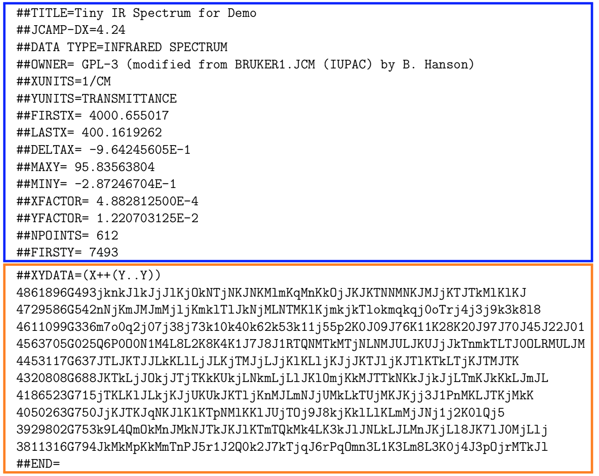

ASCII & JCAMP-DX formats
This is Part 1 of a series of posts about data formats for sharing spectroscopic data. Many folks are working from home due to a certain global pandemic. I hope you are all healthy and practicing proper social distancing!
Sharing data is intrinsic to any spectroscopic work. For many tasks, the data need never leave the instrument’s native format. Nowadays the data often goes immediately to some type of shared server, to be available for multiple users. So much of the time we don’t need to worry about format at all, especially if the acquisition software can do the chemometric analysis you need.
Increasingly however, publishers want all data deposited and documented somewhere in machine-readable, vendor-neutral form. This is one aspect of reproducible research, where all data and the scripts or steps needed to analyze them are provided electronically with every paper. Or, your data may be headed to one of the many databases out there, where specific formats are required for submission. And while most data acquisition softwares provide some analysis options, if you need to do serious chemometric analysis you likely need to get the data off the machine in a vendor-neutral form. So there are several reasons one should be familiar with the various means of sharing spectroscopic data.
Data sharing/exchange is admittedly a potentially mundane topic. After all, we just want to get on with the scientific question. However, it’s worth knowing something about the options and considering the future of the field. In general I’d say things are a bit of a mess with no clear path to a common format. This series of posts will cover several different vendor-neutral data sharing formats, their pros and cons and their future prospects.
Almost all spectroscopic instruments have some means of exporting data as simple ASCII format files. For 1D data, these usually take the form of columns of wavelengths (or the equivalent) and some form of intensity values. There may or may not be metadata and/or headers in the file. The resolution of the data in the file is usually sufficient, but it can be as low as 8-bit precision. Simple inspection is usually enough to understand these files, and eventually, read them in with R or Python, since other than the metadata these files are simply x and y values in columns.
2D NMR data in ASCII format are a bit more tedious to decipher. Assuming we are talking about data that has been processed, there are choices to be made about ordering the data and no standardization is evident in the wild. Do you export the data by rows (F2 values at fixed F1 value), by columns (F1 values at fixed F2 value), or an entire matrix? Do you export in a format that mirrors how we typically look at the data, namely the lowest F1 values are first and the lowest F2 values last? 2D NMR is unique among 2D plots in not having 0,0 in any corner. Or do you export in an increasing order, as though you were starting from 0,0? While there are a lot of combinations possible, through trial-and-error one can determine how the data was exported. This is naturally easier if you have a reference spectrum for comparison. I can say from experience that this task is do-able but annoying. Some vendors also export hypercomplex data, in which there is a copy of the data that has been transformed only along F2 and a copy in which transformation has occurred on both dimensions.
In addition to deciphering how the data is stored in an exported ASCII file, one needs to keep in mind file size, because ASCII values are not compressed. If one is dealing with IR or UV-Vis data, the typically small number of data points means the files are not large, making ASCII export a good option. For 1D NMR data with typically > 16K data points, the size of the files begins to matter a bit, especially if you have large collections of spectra, which are becoming increasingly common with autosamplers. With 2D NMR, spectra in ASCII format begin to take up some serious space, and the time needed to read in the data becomes noticable.
| Pros | Cons |
| Near-universal availability | Rarely any metadata |
| Human readible | Rarely any documentation |
| Slow to parse for large data sets | |
| For 2D NMR, internal order must be deciphered |
Because of it’s relative simplicity, and near-universal implementation in vendor software, ASCII formatted export files are here to stay.
The JCAMP-DX format and standard began at a time when hard drive space was expensive and read/write/transmission errors by hardware were a real issue. This was way before the internet: we are talking about transferring data via telephone/modem, magnetic tape and simple OCR. Hence, three key concerns were to compress the data, to build in data integrity checks and to be flexible for future expansion. Two spectroscopists working with IR data, Robert McDonald and Paul Wilks Jr., published the first standard in 1988 (McDonald and Wilks 1988), with input from instrument manufacturers. From the begininng JCAMP-DX was a project of JCAMP, the Joint Committee on Atomic and Physical Data, a committee of the IUPAC. Refinements were published in 1991 (Grasselli 1991), support for NMR was added in 1993 (A. Davies and Lampen 1993), and MS in 1994 (Lampen et al. 1994) by which time the standard was at version 5 (Lampen et al. 1999). Extensions for CD (Woollett et al. 2012), ion mobility spectrometry (Baumbach et al. 2001) and electron magnetic resonance have been proposed (Cammack et al. 2006). Interestingly, there was also an attempt to describe structure (connectivity) using the format (Gasteiger et al. 1991). In 2001 a JCAMP-DX standard for NMR pulse sequences was published (A. N. Davies et al. 2001).
Another goal for the format was to have the format be both human and machine readible. The format is composed of metadata describing the data and then the compressed data. There are several compression formats possible; some are more human readible than others! Here is a simple example of a JCAMP-DX file containing part of an IR spectrum. The blue box contains the metadata, which is clearly human readible and indeed, most meanings are immediately obvious. The orange box contains the compressed data in the “DIFFDUP” format. In another post we might dissect how that works, but for now, we can clearly read the characters but they need to be translated into actual numerical values.

| Pros | Cons |
| Near-universal availability | Minimal compression by modern standards |
| Metadata human readible | Error checking makes parsing slow |
| Compression formats can be manually detangled for checking | Error checking probably no longer needed |
| Vendors do not always follow the standard exactly |
Because of its long history and universal availability, the JCAMP-DX format appears to be here for the long-haul in spite of its limitations. Future posts in this series will cover data sharing formats that may eventually replace JCAMP-DX.